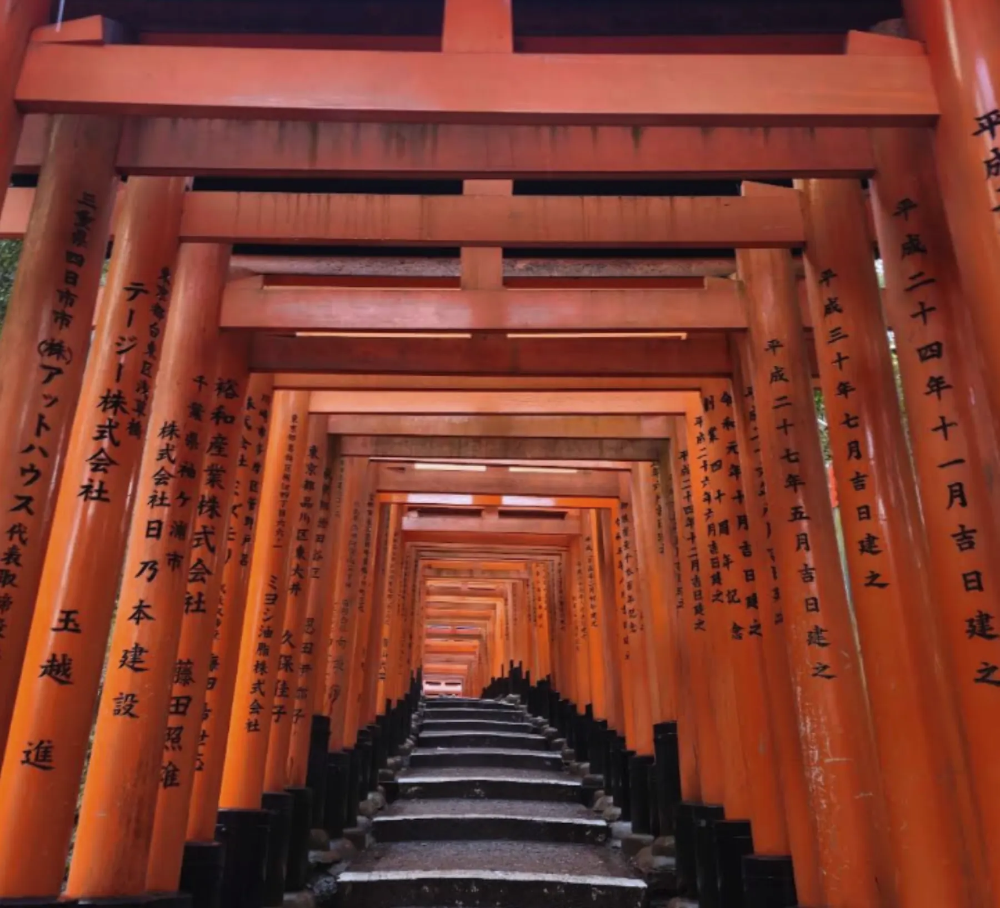
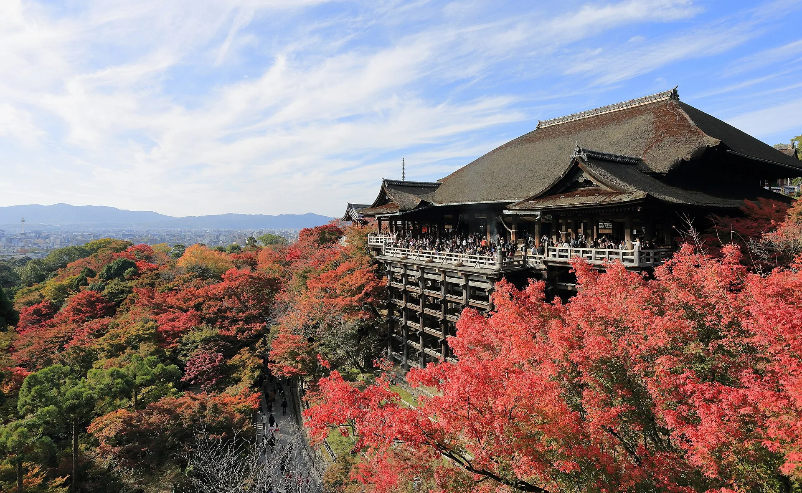

How to Spend a Day at Fushimi Inari, Kiyomizu-dera & Gion
An early start, quiet streets, and a full day of Kyoto from The Showa House.

The torii gates of Fushimi Inari in the quiet morning.
Kyoto shows you a different side of itself when you wake up a little earlier.
Before the streets become busy, the light is softer, the air feels
calmer, and familiar places can feel surprisingly peaceful.
Fushimi Inari, Kiyomizu-dera, and Gion are enough to fill one day
with many of the things that make Kyoto special: shrines, old
streets, hillside views, and time beside the river.
From The Showa House, the Keihan Railway makes it easy to reach
Kyoto early and begin before most visitors arrive.
A DAY IN KYOTO
Fushimi Inari, Kiyomizu-dera & Gion
Fushimi Inari
Early morning visit
Keihan Railway
Kiyomizu-dera
Temple and old streets
On foot
Yasaka Shrine
Gion and Maruyama Park
On foot
Kamo River
Relax beside the river
Keihan Railway
The Showa House
Return and rest
Begin at Fushimi Inari
We recommend arriving at Fushimi Inari at around 6:00 in the
morning. At this hour, the shrine has a stillness that is difficult
to find later in the day.
Walk beneath the rows of vermilion torii gates and listen to the
sound of your footsteps. There are quite a few stairs, but if you
feel comfortable continuing, we recommend climbing as far as one of
the viewpoints.
On your way back down, stop in the small streets near the shrine for
a light breakfast or a little shopping. The old-fashioned atmosphere
here feels different from central Kyoto and is part of the pleasure
of an early visit.
Continue to Kiyomizu-dera
From Fushimi-Inari Station, take the Keihan Railway to
Kiyomizu-Gojo Station, then walk uphill toward Kiyomizu-dera.
The main approach can be lively, but step into a side street and
Kyoto can become unexpectedly quiet again.
At the temple, we also recommend Tainai-meguri if it is open during
your visit. This short experience takes you through a completely
dark passage beneath the temple and feels unlike anything else in
the area.
Afterwards, take your time walking through Sannen-zaka and
Ninen-zaka. Their slopes, wooden buildings, and small shops make this
one of Kyoto’s most memorable walks.

Kiyomizu-dera and its hillside setting reward an early start.
Yasaka Shrine and Gion
Continue toward Yasaka Shrine, at the edge of Gion. It is one of the
places we especially recommend—and it is also where we celebrated
our wedding, so it holds many happy memories for us.
Beside the shrine, Maruyama Park is a pleasant place to pause. There
are many atmospheric cafés in and around Gion, so choose one that
catches your eye and enjoy a slower part of the afternoon.
Before returning, walk toward the Kamo River. In Kyoto, it is common
to see people sitting on the riverbank, talking quietly or simply
watching the water.
Sitting there for a while is a gentle, very Kyoto way to end the
day. When you are ready, return by Keihan Railway to Kuzuha and The
Showa House.